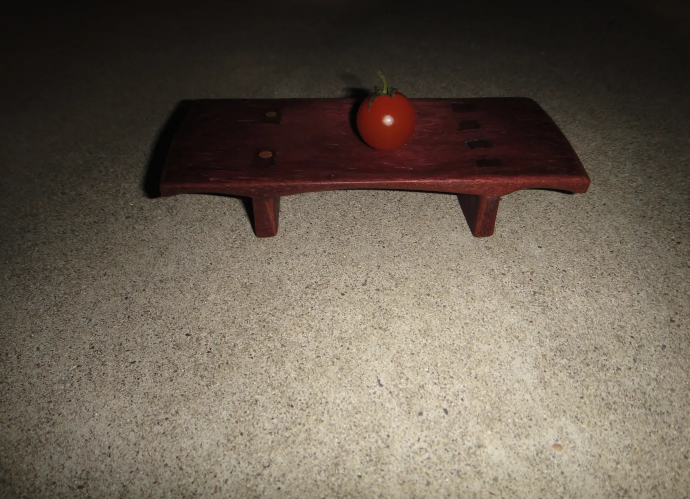
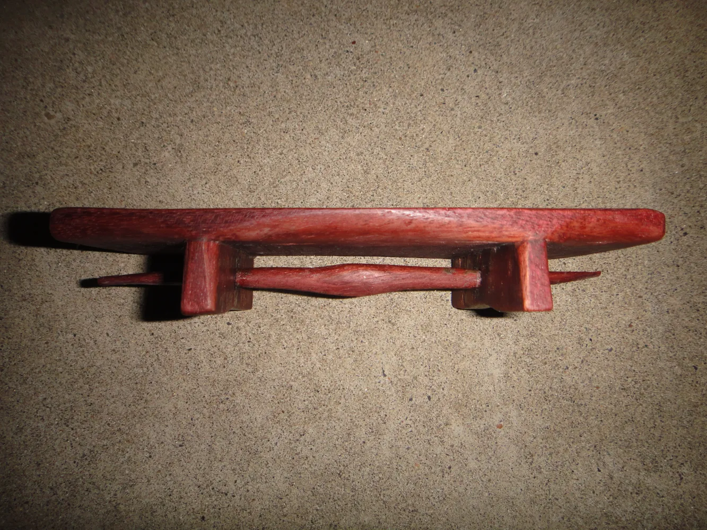
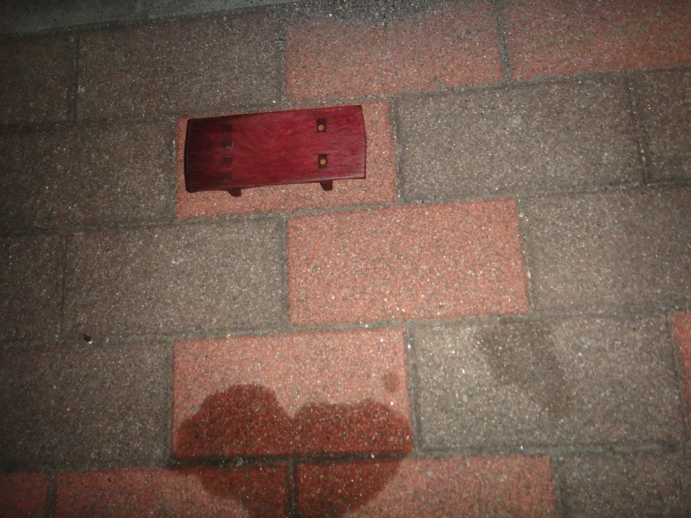
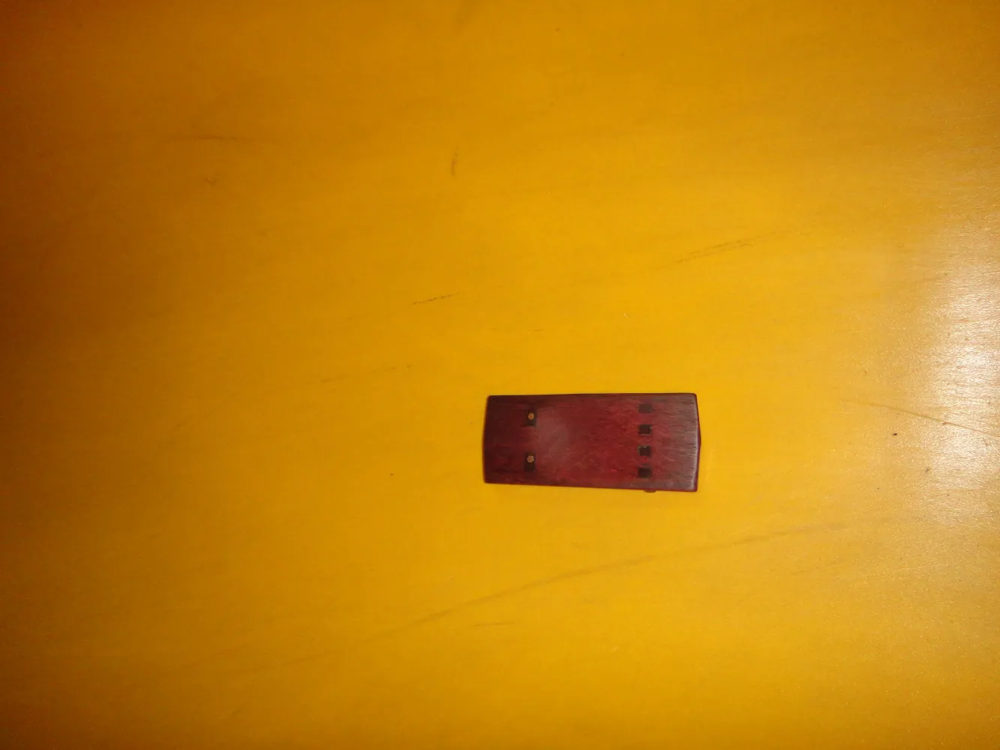

Small Tray
/小物置き
The joints of the two legs become the eyes and a mouth,
and the hollow carved at the center holds small objects.
Size: H30xW64xD150mm
Materials: Purple Heart
二つの足が目と口になるよう組み木をし、中央に物を置く窪みをつけた
サイズ：H30xW64xD150mm
素材：パープルハート



